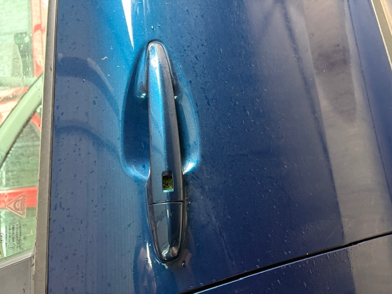

Initial inspection
I know this sounds strange but, the first thing you want to do is to verify that you actually have an issue and what the complete issue is. This is important because you do not want to waste your time and money on a part that is not actually broken. You also want to make sure that you are not missing any other issues that may be related to the one you are trying to fix. For example, if you have a broken outter door handle, you want to make sure that the inner door handle is not also broken and that the door lock is not also broken. You also want to make sure that the issue is actually with the door handle and not with the door latch or the door lock.
Verification of the Issue
Luckily fun me, the issue was very obvious. The outter door handle was missing the lock/unlock button which made that mechanism stop working. I was able to verify that the issue was with the door handle and not with the door latch or the door lock by trying to use the inner door handle and the door lock. The inner door handle worked fine and the door lock worked fine, so I knew that the issue was with the outter door handle itself.

Probable Cause of the Issue
Over time the tiny rubber piece that makes up the button you push wears out making it brittle. This is what happened to my door handle. The button broke off and the mechanism that the button is attached to stopped working. This is a common issue with outter door handles and it is usually caused by wear and tear over time.
Knowing the Issue and the Cause
Knowing the correct issue and the probable cause, I was able to purchase the correct part from the dealership and complete the repair myself. This saved me a lot of time and money because I did not have to take my car to a mechanic and pay for a diagnostic fee and then pay for the repair.